株式会社タツミハウジング 御中
YouTube運用
ご提案資料
愛知の水回りリフォームの相談を
YouTubeから集めるご提案
2026年11月23日
株式会社AdGrace
01 前提の共有
現在の集客と、YouTubeで得られる効果
Google検索・ブログ
自社で運用中
検索の1ページ目に
上位表示される傾向
口コミとブログを中心に
御社内で運用されています。
フォロワーは増加中
2か月半で
500〜600人の増加
約2,400人から3,000人近くまで
増えました。問い合わせ導線は
今後設置のご予定です。
YouTube
ご提案
費用と補助金を調べる人が
動画を見て相談に来る
リフォームの前に自分で調べる人が
動画を見て、タツミハウジング様に
頼むと決めてから連絡します。
※前回のお打ち合わせで伺ったお話をもとに、弊社で整理したものです。
株式会社タツミハウジング御中 YouTube運用 ご提案資料 ｜ 02
02 YouTubeの一番のメリット
顧客の質の向上
会社の違いが伝わらない問い合わせ
大手と金額で
比べる人
会社ごとの違いが分からないので
全国展開の大手と
見積もりの金額で比べます。
YouTubeで得られること
質の高いリードの
獲得が実現する
動画を何本か見て
社長の人柄とサービスを信頼した方からの
問い合わせが増えます。
株式会社タツミハウジング御中 YouTube運用 ご提案資料 ｜ 03
03 チャンネルの方針
水回りの悩みの解決策と補助金を
徹底解説するチャンネル
1本ごとの作り
水回りの悩み → 解決策と補助金を解説
例：お風呂が寒い → 直し方と費用 ／ 補助金 → 対象の工事と、戻る金額
誰に
愛知の
築20年以上の持ち家
キッチン・お風呂・洗面・
トイレが古くなってきた
ご家庭です。
何を
悩みの解決策と
使える補助金
見積もりが会社ごとに違う
理由まで話して
信用してもらいます。
ゴール
水回りリフォームの
見積もり相談
中古住宅の購入と
リフォームをまとめた
相談にも広げられます。
株式会社タツミハウジング御中 YouTube運用 ご提案資料 ｜ 04
04 リフォームのYouTube市場
市場の広い、水回りリフォームのYouTube
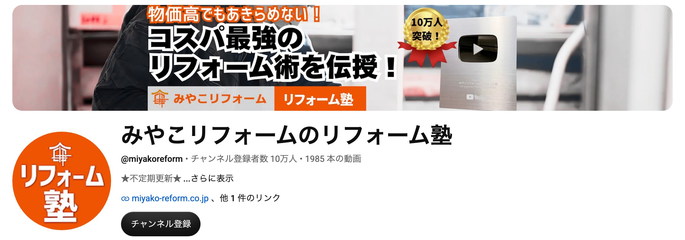
水回りリフォームを扱った回（再生数は2026年11月22日時点）
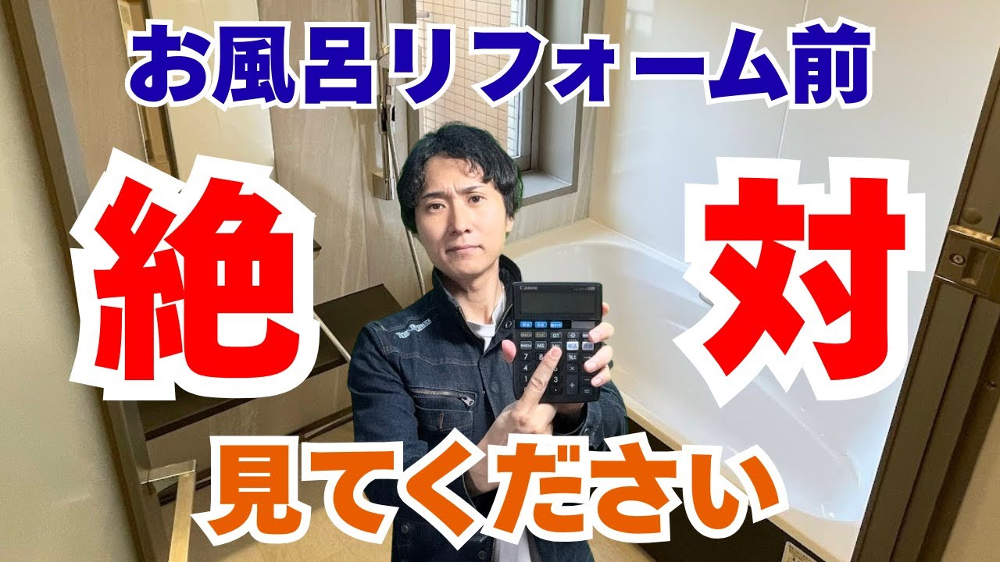
8.3万回
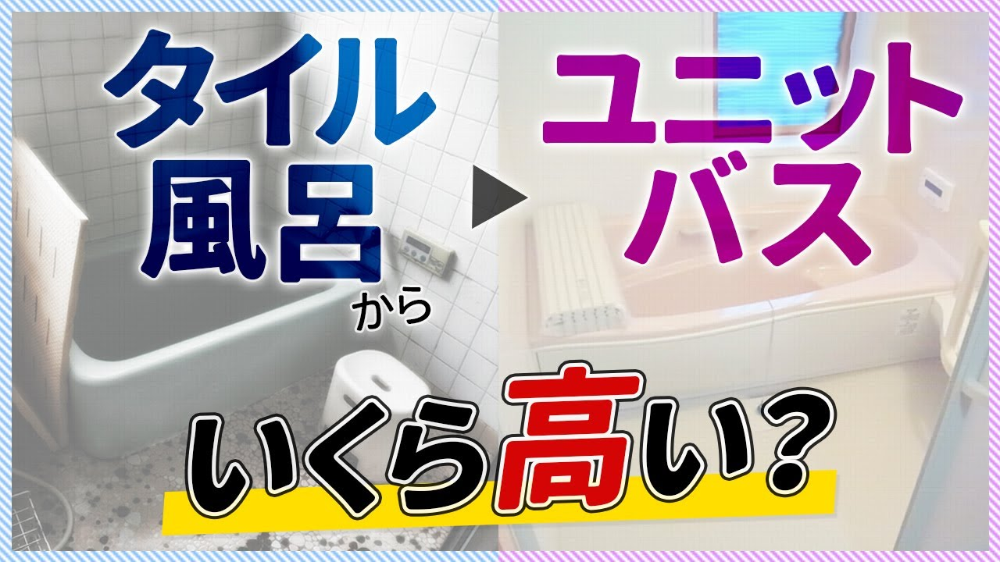
3.9万回
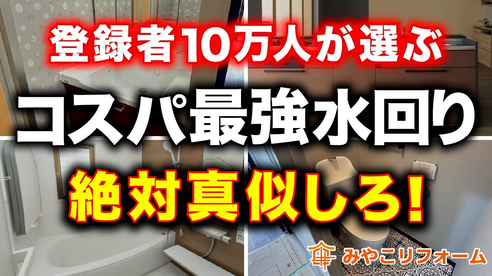
3.6万回
株式会社タツミハウジング御中 YouTube運用 ご提案資料 ｜ 05
04 リフォームのYouTube市場
補助金と価格の解説で、再生を集めるチャンネル
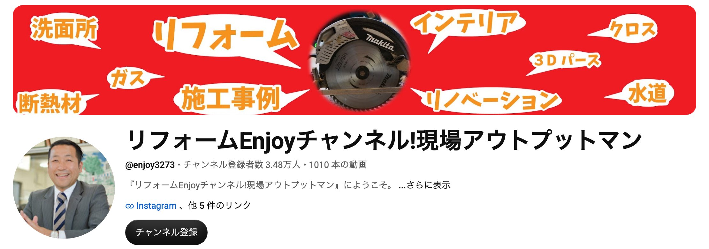
補助金と価格を扱った回（再生数は2026年11月23日時点）
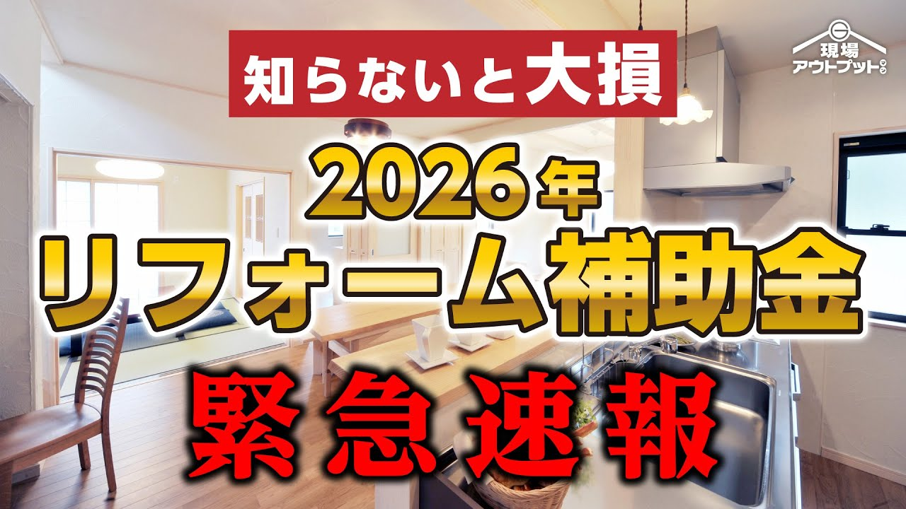
12.9万回
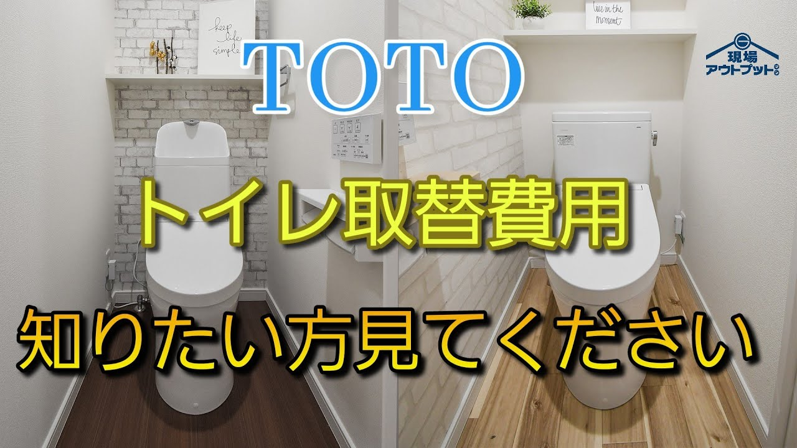
12.0万回
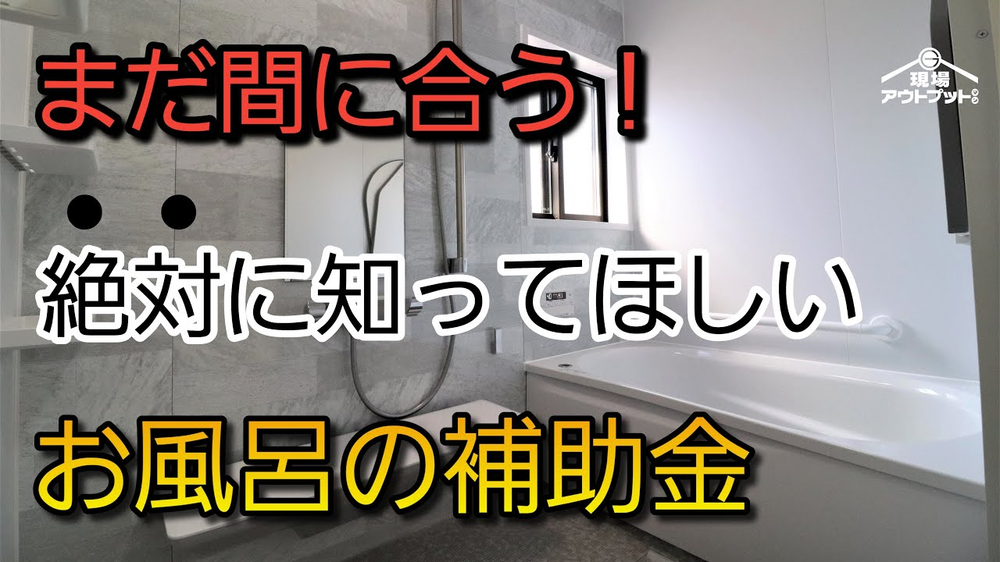
2.6万回
株式会社タツミハウジング御中 YouTube運用 ご提案資料 ｜ 06
04 リフォームのYouTube市場
登録者1万人未満で、20万回見られるチャンネル
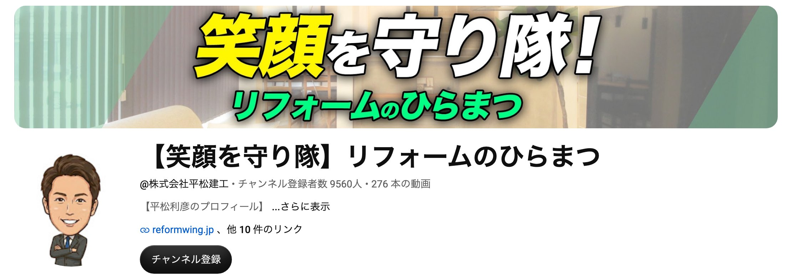
お風呂・トイレを扱った回（再生数は2026年11月23日時点）
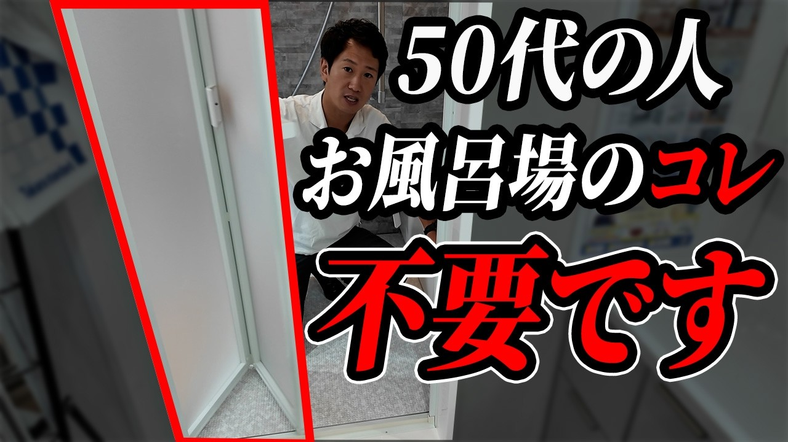
20.4万回
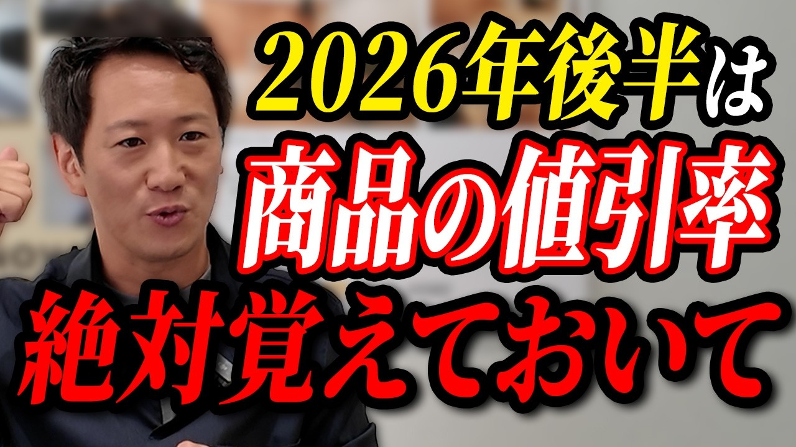
3.4万回
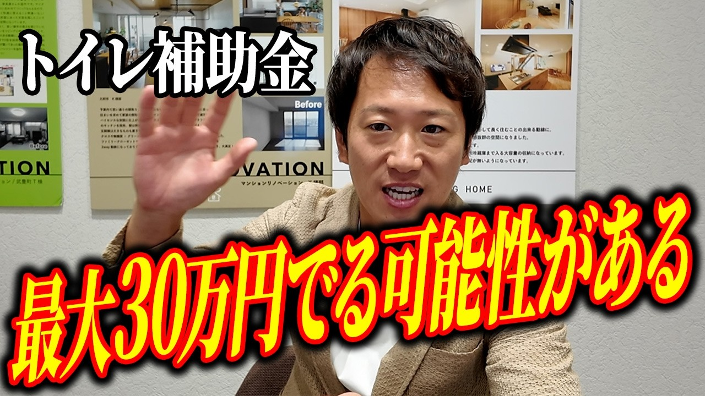
2.3万回
株式会社タツミハウジング御中 YouTube運用 ご提案資料 ｜ 07
05 狙う視聴者
愛知で、水回りを直したい人
視聴者1
お風呂やキッチンが
古くなった50〜60代
築20〜30年の持ち家で
設備の交換を考えている。
いくらかかるか分からない。
SEO：お風呂 リフォーム 費用
キッチン 交換 費用
視聴者2
補助金を使って
直したい人
補助金が出ると聞いたが
対象の工事も、申請の
方法も分からない。
SEO：お風呂 リフォーム 補助金
キッチン リフォーム 補助金
視聴者3
中古住宅を買って
直したい30〜40代
新築は建築費が上がって
手が届かない。中古を買って
水回りを新しくしたい。
SEO：中古住宅 リフォーム 費用
中古住宅 水回り 交換
愛知に絞る理由
愛知のリフォーム会社のチャンネルは、まだ小さい
リフォームを頼む人は、家まで来てもらえる近くの会社を探すので、地域を絞っても問い合わせの数は十分に見込めます。
全国向けのリフォームチャンネル
登録者 10万人
愛知のリフォーム会社のチャンネル（調べた4社）
登録者 31〜5,550人
株式会社タツミハウジング御中 YouTube運用 ご提案資料 ｜ 08
06 企画の切り口
費用・補助金への答えと、地元の施工例
1
お風呂の交換、いくらかかる？
→ 本体・工事費と、追加でかかる費用
2
水回りの補助金、いくら戻る？
→ 対象の工事と、申請の流れ
3
キッチンの見積もりは、なぜ会社で違う？
→ 見積書で見るところ
4
水回り4か所、まとめて直すと得？
→ 別々に直す場合との費用の差
5
タイルのお風呂は、ユニットバスにできる？
→ 工事の中身と、かかる日数
6
豊川の築30年の家、お風呂を直した費用施工例
→ 見積もりから完成まで
7
補助金を使ったキッチン交換施工例
→ 戻った金額と、手続きの流れ
8
中古住宅を買って、水回りを直した家施工例
→ 購入とリフォームの総額
株式会社タツミハウジング御中 YouTube運用 ご提案資料 ｜ 09
07 演者
演者の想定パターン
弊社が行うこと
企画・台本・撮影・編集・投稿まで、すべて弊社で対応
おすすめ
佐宗社長がご出演
社長が顔を出して話すことで
会社の信頼性と透明性が
見る人に伝わります。
社長が難しい場合
社内のスタッフがご出演
現場に出ているスタッフの方が
工事の中身を
自分の言葉で話します。
株式会社タツミハウジング御中 YouTube運用 ご提案資料 ｜ 10
08 問い合わせまでの流れ
YouTubeからの流入を、公式LINE経由で見積もり相談へ
STEP 1
リフォーム前の
情報収集
費用や補助金を
調べて動画を見る
STEP 2
施工例を見る
豊川・豊橋の
施工例で
会社を知る
STEP 3
公式LINEに
登録する
補助金の情報や
イベントの案内を
受け取る
STEP 4
LINEで
相談する
電話なしで
費用を聞ける
GOAL
現地調査・
お見積もりへ
公式LINEは、友だち約200人の現在のアカウントをそのまま使えます。
株式会社タツミハウジング御中 YouTube運用 ご提案資料 ｜ 11
09 効果
YouTubeで得られる効果
効果1
資産になる動画が
24時間回り続ける
動画は公開したあとも
24時間、検索で見られ続けます。
広告費はかかりません。
月4本なら、1年で48本です。
効果2
既存施策の
CVRが上がる
ホームページとInstagramに
動画のリンクを貼ります。
動画を見てから
問い合わせる人が増えます。
効果3
AI検索で
上位に表示されやすい
ChatGPTやGoogleのAIに
リフォームの費用を聞いた人に
タツミハウジング様の動画が
答えとして出やすくなります。
※GoogleのAI Overviewsが答えに使う情報源のうち、29.5%がYouTubeで、サイト別で1位です（BrightEdge調べ、2024年5月〜2025年9月）。
株式会社タツミハウジング御中 YouTube運用 ご提案資料 ｜ 12
10 運用の実績
登録者が少なくても、問い合わせにつながる実績
大阪のリフォーム会社
登録者 約720人で
YouTube経由の単月の売上
約1,000万円
| 運用先 | 成果 |
|---|---|
| 大阪のリフォーム会社 | 登録者約720人で、単月の売上約1,000万円 |
| 淡路島の買取再販会社 | 約半年の運用で、YouTube経由で物件が成約 |
| チャンネルの立ち上げ | 2022年から1年で20チャンネル以上を立ち上げ・運用 |
社名は非公開です。チャンネルは打ち合わせの場でお見せします。
株式会社タツミハウジング御中 YouTube運用 ご提案資料 ｜ 13
11 問い合わせ数の目標
1年後に、月10件の水回りリフォームの相談
3か月後
月1〜3件
最初の問い合わせが
入り始めます
半年後
月5件
反応のよい企画を増やして
件数を伸ばします
1年後
月10件
月10件の相談を
安定して得ます
※目標の数字です。出演される方や、撮影の本数によって変わります。
株式会社タツミハウジング御中 YouTube運用 ご提案資料 ｜ 14
12 運用プラン
運用プランと料金
まず始める
月2本プラン
本数
月2本
中身
企画・撮影・編集・サムネイル・分析
公式LINE
含みません
料金
月額20万円〜
おすすめ
月4本プラン
本数
月4本
中身
企画・撮影・編集・サムネイル・分析
公式LINE
軽微な運用保守（エラー時の対応
時期に合わせた画像の差し替えなど）
料金
月額35万円〜
ご負担は撮影へのご出演のみです（社員の方のご出演も可）。
※どちらのプランも、別途、初期費用200,000円（税別）が必要です。※動画の尺や撮影の手間によって、金額が変わることがあります。
株式会社タツミハウジング御中 YouTube運用 ご提案資料 ｜ 15
13 今後の流れ
今後の流れ
01
本日
進め方のご相談
出演する方（社長か、スタッフの方か）を決めます
02
ご依頼後
企画のご提案
狙う検索語と、最初の4本の企画をお送りします
03
撮影の開始
撮影日を決めて、制作を始めます
04
運用・改善
毎月、再生数と問い合わせ数を見て、次の企画を直します
株式会社タツミハウジング御中 YouTube運用 ご提案資料 ｜ 16